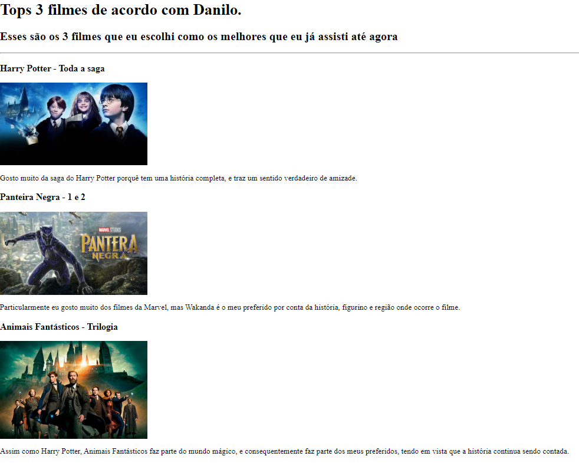

Portifólio do Danilo
Aqui estão alguns dos projetos iniciais que eu criei:
Nesse simples projeto eu elenquei os 3 filmes que eu considero como os melhores para mim.
Projeto Tops 3 Filmes

O segundo projeto foi um convite de aniversário personalizado que eu criei para os meus convidados.
Projeto Convite de Aniversário

Sobre Mim Entre em contato